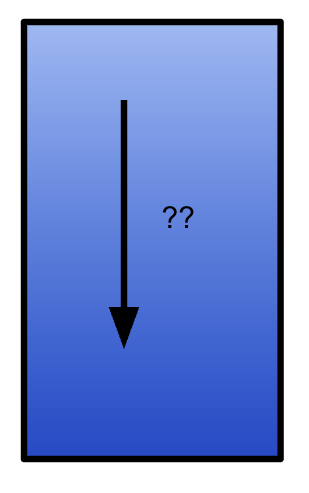
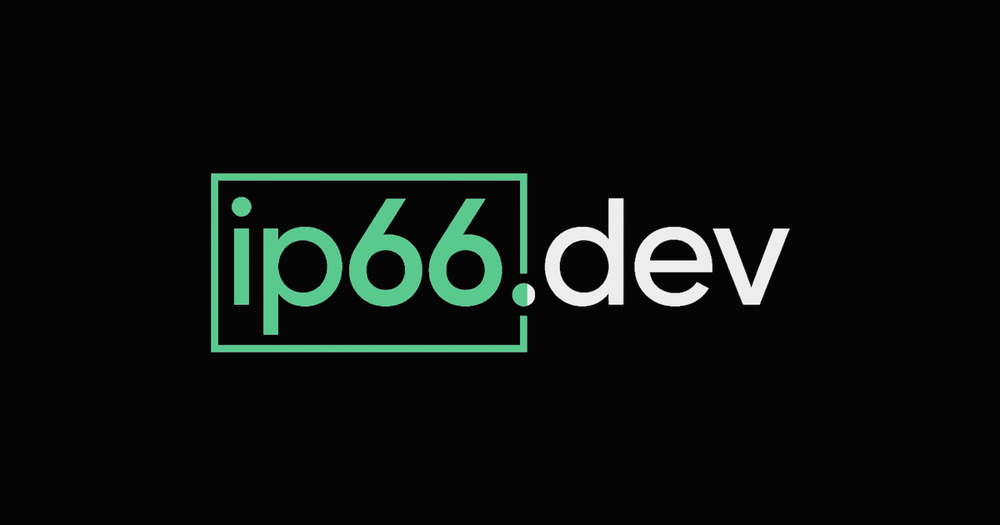

THE FRONT PAGE
EDITOR'S NOTE: We find ourselves celebrating the manual scrubbing of vendor silicon as a radical act, a reminder that while we can automate the assembly of ghosts, we have nearly forgotten how to actually talk to the machine. #The friction between bespoke engineering craftsmanship and the accelerating velocity of automated abstraction.
A UC Davis trial successfully delivered stem cells to fetuses with spina bifida via in-utero surgery, marking the first human test of the approach. Early safety data is promising, though long-term neurological tradeoffs remain uncharted—and the procedure’s invasiveness raises questions about scalability beyond elite medical centers.
The deployment of low-cost, expendable loitering munitions marks a pivot from traditional software-defined warfare to mass-produced attrition. While effective at saturating defense logic, these systems present a steep risk of unintentional escalation through rigid, non-recursive targeting parameters.
Engineering a milk-based plastic that degrades within a single fiscal quarter addresses the accumulation crisis, though it forces a difficult tradeoff between structural longevity and environmental hygiene. We are trading the permanence of software and materials for a fragility that requires much stricter version control.
Researchers have identified discrete circuits governing behavioral personae within large language models, suggesting that 'alignment' may simply be a crude toggle between pre-existing weights rather than a fundamental shift in model reasoning. The tradeoff remains a loss of generalizability: as we isolate and fix these traits, we risk brittle performance in edge cases where nuance is discarded for consistency.

Recent attempts to derive fluid dynamics via large language models reveal a dependency on probabilistic recall rather than first-principles reasoning, risking a future where engineers mistake pattern matching for physics. While the output appears mathematically sound, the lack of a grounding symbolic engine introduces a high risk of catastrophic failure in non-standard boundary conditions.
A new tutorial demystifies quantum hardware assembly for hobbyists, but the practical tradeoff—requiring liquid helium and a six-figure budget—raises questions about who this is really for. The absence of accompanying benchmarks leaves its utility as unclear as a qubit in superposition.
A newly unearthed analysis of Georges Méliès’ *Le Voyage dans la Lune* (1902) reveals its lesser-known predecessor, *L’Attaque des Automates* (1897), may depict the earliest cinematic robot attack—a hand-cranked, stop-motion spectacle that predates *Metropolis* by three decades. The discovery forces a reckoning with how early filmmakers grappled with automation’s existential threat, long before the term 'AI' existed, though the footage’s fragility raises questions about whether its restoration risks erasing its original, jittering menace.

Free geolocation databases provide a necessary utility for localized routing, yet they risk cementing a reliance on imprecise, static snapshots over active network verification. The trade-off remains a loss of precision in exchange for bypassing the toll-booths of proprietary data providers.
Anthropic’s latest collaborative feature unilaterally claims significant disk real estate to spin up a virtualized environment, trading local resource transparency for a seamless developer sandbox. It marks another step toward software that treats the user’s hardware as a mere host for opaque, heavy-duty bundles.
Apple’s latest hardware update places a high-performance M4 chip into a consumer-grade slab, a move that provides massive thermal headroom but highlights the widening gap between over-engineered silicon and stagnant software paradigms. The risk is a persistent 'compute debt' where users pay for specialized transistors that remain functionally dormant under restrictive operating systems.
Collabora’s annual progress on mainline support for the RK3588 and RK3576 highlights the grueling labor required to reclaim hardware from proprietary forks, though upstreaming remains a precarious race against hardware obsolescence.
MODEL RELEASE HISTORY
No confirmed model releases were detected for this edition date.